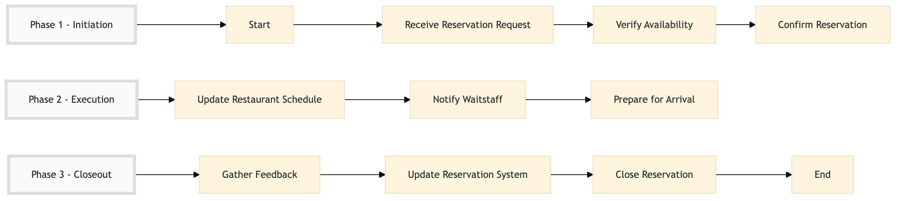

| Role | Steps |
|---|---|
| Front Desk Agent | 1.1 1.3 3.3 |
| Restaurant Manager | 1.2 2.1 2.2 3.1 3.2 |
| Restaurant Staff | 2.3 |
| Step | Name | Role | System | Input | Output | KPI | Dec? | Exc? | Pain Point / Risk |
|---|---|---|---|---|---|---|---|---|---|
| 1.1 | Receive Reservation Request | Front Desk Agent | Oracle OPERA Cloud | Customer details (name, contact info, reservation date/time) | Reservation request logged in Oracle OPERA Cloud | < 3 min response time | N | Y | Handling last-minute requests and ensuring availability |
| 1.2 | Verify Availability | Restaurant Manager | Oracle OPERA Cloud, IDeaS G3 RMS | Reservation request details | Availability check report | < 5 min | Y | N | Managing overlapping reservations and ensuring no double bookings |
| 1.3 | Confirm Reservation | Front Desk Agent | Oracle OPERA Cloud, Book4Time | Availability check report | Reservation confirmation email/sms to customer | < 2 min | N | Y | Ensuring correct information is sent to the customer |
| 2.1 | Update Restaurant Schedule | Restaurant Manager | Oracle OPERA Cloud, IDeaS G3 RMS | Reservation confirmation | Updated restaurant schedule | < 5 min | N | Y | Keeping the schedule up-to-date with frequent changes |
| 2.2 | Notify Waitstaff | Restaurant Manager | Oracle OPERA Cloud, Book4Time | Updated restaurant schedule | Notification to waitstaff | < 3 min | N | Y | Ensuring all staff are informed of changes |
| 2.3 | Prepare for Arrival | Restaurant Staff | Oracle OPERA Cloud, Book4Time | Customer arrival notification | Table prepared and ready for guests | < 10 min | N | Y | Handling rush hour arrivals and ensuring smooth service |
| 3.1 | Gather Feedback | Restaurant Manager | Oracle OPERA Cloud, Book4Time | Customer feedback post-dining | Feedback recorded in Oracle OPERA Cloud | < 5 min after dining | N | Y | Collecting and analyzing customer feedback |
| 3.2 | Update Reservation System | Restaurant Manager | Oracle OPERA Cloud, IDeaS G3 RMS | Feedback and dining details | Updated reservation record in Oracle OPERA Cloud | < 5 min | N | Y | Updating records accurately to maintain guest history |
| 3.3 | Close Reservation | Front Desk Agent | Oracle OPERA Cloud, Book4Time | Final dining details and feedback | Reservation closed in Oracle OPERA Cloud | < 2 min | N | Y | Closing reservations promptly to free up resources |
This process manages table reservations at a full-service Marriott hotel using Oracle OPERA Cloud and other Marriott systems to ensure efficient and seamless operations.